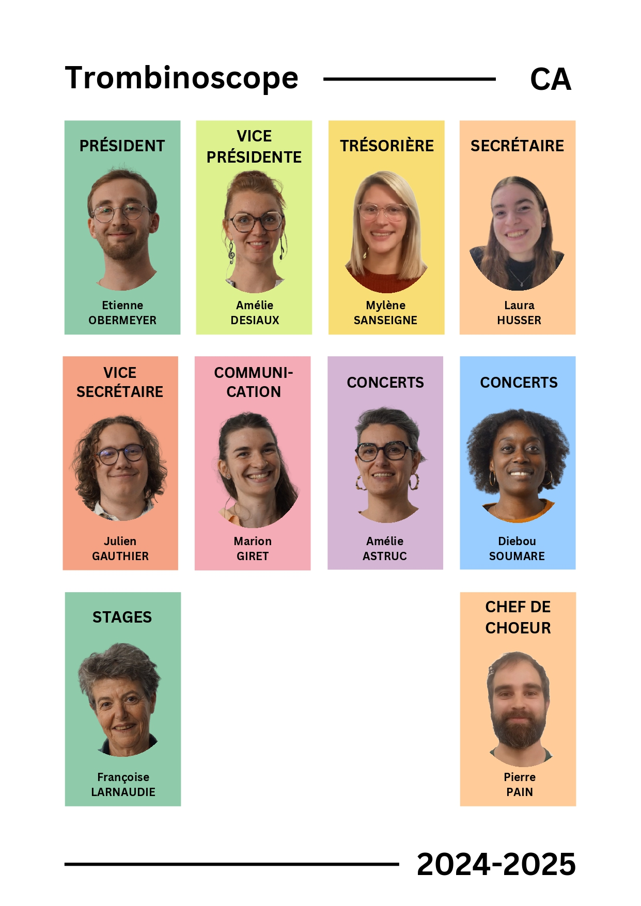

C'est un lieu de découverte du chant dont la finalité première est d'amener chacun.e à vivre et ressentir l'expérience de sa propre voix parmi d'autres voix. L’association développe le chant sous toutes ses formes, au sein de l'Université de Franche-Comté à Besançon, notamment par la création de formations vocales, l'éducation musicale de ses membres, la participation à des manifestations culturelles, universitaires ou non (concerts, spectacles, animations, auditions...) ou l'organisation de celles-ci. C'est un lieu convivial de rencontres entre les choristes qui partagent le plaisir de chanter. La Chorale universitaire de Besançon n'est pas une chorale comme les autres : elle chante sans partition sur scène.
L'association est entièrement gérée par ses adhérent.e.s, membres bénévoles et volontaires issus de chaque ensemble vocal. Ils forment le Conseil d'Administration
Chaque choriste (même hors du Conseil d'Administration) peut s'investir dans la vie de l'association au-delà des répétitions. L'élection des membres du Conseil d'Administration a lieu chaque année à la rentrée pour une durée d'un an renouvelable.
La direction artistique de la Chorale universitaire est assurée par un.e chef.fe de chœur professionnel.le. Depuis la rentrée 2024, il s'agit de Pierre Pain !
"Je suis musicien, batteur de formation, passionné depuis longtemps par la musique, le piano, le chant et particulièrement par la polyphonie vocale. J’ai commencé le métier de chef de chœur en amateur dans mon petit village de Haute-Saône il y a deux ans maintenant. À ce moment-là je ne pensais pas que ça irait si loin si vite. Je suis passé professionnel l’année dernière avec trois ensembles à ma charge. Et maintenant la CUB me fait confiance et j’ai hâte de pouvoir continuer cette aventure avec elle."